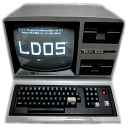
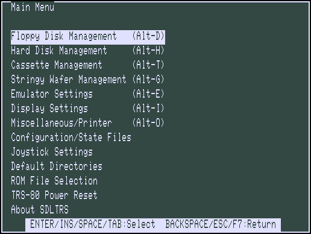
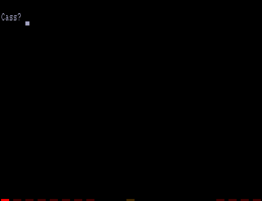

|  | SDLTRSFeaturesIntroduction | Features | Options | Text GUI | Known Bugs | Release History | Credits |
SDLTRS is built on top of a Z80 emulator, with added routines to support keyboard and video I/O through a SDL interface. The hardware emulation can operate as a TRS-80 Model I, Model III, Model 4, or Model 4P.
SDLTRS supports 48K of RAM in Model I or Model III mode, 128K in Model 4 or Model 4P mode. Some memory expansions like Alpha Technology's "SuperMem" (512 KB), "HyperMem" (1 MB) and "MegaMem" (3 MB) by Anitek, Dave Huffman's (and others), "Selector" (LNW80 compatible) of the Dutch TRS-80 Users Society, are also supported. Floppy disks and hard disks are emulated using files to store the data; under Linux only, real floppy drives can be used.
There is support for Model I and Model III clones: the function keys F1 -
F4 are working for Dick Smith's "System 80 MK II" and the TCS "Genie II".
Later TCS models, like "SpeedMaster" ("Genie IIs") and the "Genie IIIs", are
also supported: these were just (highly) extended TRS-80 Model I clones and
are detected by the emulator based on the ROM data. This also applies to the
EG 3200 Genie III (EACA). Only for the TCS "SpeedMaster" (or "Genie IIs") the
option -speedup tcs is required. The 480*192 HRG resolution for
these machines - and the LNW80 - is supported. The extended 16 kB ROM of the
brazilian Model III clones Prologica CP-300 and CP-500 also works.
A printer is emulated by sending its output to a text file. A serial port is emulated using a host serial port. Cassette I/O is emulated using files to store the cassette data. Game sound and music output are also supported. Though the cassette port, through the Model 4 sound option, and through the optional Orchestra-85/90 music synthesizer card are all emulated. In Model I mode, the HRG1B graphics card is emulated. The Lowe Electronics LE18 graphics adapter is also supported. In Model III and 4/4P mode, you can select whether the Radio Shack Graphics Card or Micro-Labs Grafyx Solution is emulated. There is also a mouse driver for model 4/4P mode. Several common time-of-day clock cards are emulated on all models. The Alpha Products joystick is emulated using the numeric keypad, or through a SDL compatible joystick.
Because SDLTRS emulates the hardware, all known TRS-80 Model I/III/4/4P operating systems should run on it, including all flavors of TRSDOS, LDOS/LS-DOS, NEWDOS, DOSPLUS, MultiDOS, and TRS-80 CP/M. However, the emulator also includes some extensions to the standard hardware, and the special drivers, utilities, and instructions needed for these are not provided for all operating systems.
The Z80 emulator has an optional debugger called zbx. If SDLTRS was
compiled with this feature, you can enter the debugger either by starting
SDLTRS with the -debug flag or by pressing F9 or
Alt-Z while SDLTRS is running. The debugger runs in the command line
terminal window that you started SDLTRS from. Once you are in the debugger,
type help for more information.
The following keys have special meanings to SDLTRS:
| Host Key | Function |
| F1 | TRS-80 F1 key |
| F2 | TRS-80 F2 key |
| F3 | TRS-80 F3 key |
| F4 | TRS-80 Model 4/4P Caps Lock key or F4 key |
| F5 or ScrollLock | TRS-80 '@' key or F5 key |
| F6 | TRS-80 shifted '0' or F6 key |
| F7 | Main Menu or F7 key |
| Shift-F7 | Emulator Settings or Shifted F7 key |
| F8 | Quit SDLTRS or F8 key |
| Shift-F8 | Abort SDLTRS or Shifted F8 key |
| F9 | Enter zbx debugger or toggle fullscreen mode |
| Shift-F9 | Toggle CPU panel in window title bar |
| F10 | Warm Reset |
| Shift-F10 | Power on Reset (reboot) |
| F11 | Show key bindings |
| Shift-F11 | Save screenshot as BMP file |
| F12 | Switch Turbo Mode on or off |
| Shift-F12 | Reset the Z80 CPU clock rate to default |
| NumLock | Toggle numeric keypad as joystick emulation |
| 1 - 6 (on the numeric keypad) | P1 - P5 and ESC for TCS Genie IIIs |
| ESC | TRS-80 Break key |
| Left Arrow or Backspace | TRS-80 Left Arrow key |
| Right Arrow or Tab | TRS-80 Right Arrow key |
| Up Arrow | TRS-80 Up Arrow key (caret for exponent) |
| Down Arrow | TRS-80 Down Arrow key |
| Home or Clear | TRS-80 Clear key |
| End | TRS-80 Shifted Down Arrow key (used as a Control key with some
TRS-80 software), ESC key (EACA EG 3200 Genie III/TCS Genie IIIs) or P2 key (TCS Genie IIs/SpeedMaster) |
| Control | TRS-80 Control key / TCS Genie IIs and SpeedMaster P1 key |
| Page Up | TRS-80 Left Shift key |
| Page Down | TRS-80 Right Shift key |
| Delete | TRS-80 Left Arrow key / Genie III(s) Clear key |
| Insert | TRS-80 Underscore key |
| Shift-Up Arrow | TRS-80 ESC key |
| Shift-Page Up | Switch to fast Z80 CPU clock speed |
| Shift-Page Down | Switch to slow Z80 CPU clock speed |
| Alt-Delete | Warm Reset |
| Alt-Insert | Insert key via Virtual Keyboard |
| Alt-Enter | Switch from Windowed to Fullscreen mode and back |
| Alt-Home | Set windowed mode scaling to lowest size |
| Alt-Page Down | Set windowed mode scaling to next higher size |
| Alt-Page Up | Set windowed mode scaling to next lower size |
| Alt-'-' or Alt-8 | Decrease the clock rate of the Z80 CPU (USE WITH CAUTION) |
| Alt-'+' or Alt-9 | Increase the clock rate of the Z80 CPU (USE WITH CAUTION) |
| Alt-'.' | Show or hide the mouse pointer in the Emulator window |
| Alt-0...7 | Insert Floppy disk into drive 0...7 |
| Shift-Alt-0...7 | Remove Floppy disk from drive 0...7 |
| Alt-A | Select All on TRS-80 Emulator screen |
| Alt-B | Toggle LED Display at bottom of the Emulator screen |
| Alt-C | Copy from TRS-80 Emulator to clipboard |
| Alt-D or Alt-F | Floppy Disk Management |
| Alt-E | Emulator Settings |
| Alt-G | Stringy Floppy Wafer Management |
| Alt-H | Hard Disk Management |
| Alt-I | Display (Interface) Settings |
| Alt-J | Joystick GUI |
| Alt-K | Show key bindings |
| Alt-L | Load Emulator State |
| Alt-M or Alt-Comma | Main Menu |
| Alt-N | Switch Turbo Mode on or off |
| Alt-O | Miscellaneous (Other) Settings |
| Alt-P or Pause | Pause Emulator (and then unpause) |
| Alt-Q or Alt-End | Quit SDLTRS |
| Alt-R | Read Configuration |
| Alt-S | Save Emulator State |
| Alt-T | Cassette (Tape) Management |
| Alt-U | Toggle Sound Output (mUte/Unmute) |
| Alt-V | Paste from clipboard to TRS-80 Emulator |
| Alt-W | Write Configuration |
| Alt-X | Execute selected CMD file in the Emulator |
| Alt-Y | Switch Scanlines in the Emulator window on or off |
| Alt-Z | Enter zbx debugger or toggle fullscreen mode |
In Model III, 4, and 4P modes, the left and right shift keys are distinct;
in Model I mode, they are the same. The keys [, \, ], ^, _, {, |, }, and ~
also activate unused positions in the keyboard matrix (address bit 3, data
bits 3-7). With many TRS-80 keyboard drivers, these keys map to the
corresponding ASCII characters; with others, they do nothing. In some cases
you may find the shift state is reversed from what it should be; if you press
[ but { is displayed instead (etc.), see the -shiftbracket and
-noshiftbracket options below to correct the problem. The Insert
key maps to the same position as underscore (address bit 3, data bit 7), so
that this key can be used both with and without shift pressed; with many
TRS-80 keyboard drivers one of these maps to ASCII code 0x7f.
Pressing a key on a numeric keypad with NumLock disengaged emulate the Alpha Products joystick. Keys 2, 4, 6, 8 (KP_Down, KP_Left,KP_Right, KP_Up) are the main directions; keys 1, 3, 7, and 9 (KP_End,KP_Page_Down, KP_Home, KP_Page_Up) work as diagonal directions by activating two main directions at once; and key 0 (KP_Insert) or 5 (KP_Begin) is the fire button.
In addition to command line options to set the emulator options (most of which are also settable in
the Text GUI), SDLTRS allows the use of
Configuration Files. On UNIX like systems, if no configuration file is
specified, it will use (or create if it doesn't exist) one hidden in the users
home directory named .sdltrs.t8c. On Windows, if no configuration
file is specified, it will use (or create if it doesn't exist) one in the same
directory as the executable named sdltrs.t8c.
SDLTRS provides a Text based menuing system that allows you to most aspect of emulator operation (more info on the Text GUI page). The Text GUI is entered by pressing the F7 key, Alt-M or Alt-Comma and exited by using the F7 key again, BackSpace or ESC.
A picture of the top level menu of the GUI is below:

To control the emulated cassette, a file for the loaded tape is controlled
by the -cassette option or the cassette option in the menu system.
There is also a menu option to control the cassette position in the file.
For printer support, any text sent to the TRS-80's printer (using
LPRINT or LLIST, for example) may be sent to a text file.
In Model I mode, SDLTRS emulates a Radio Shack Expansion Interface with the Percom Doubler or Radio Shack Doubler installed. The Doubler provides double-density disk access by allowing either the stock WD1771 FDC chip or a WD1791 chip to be selected under program control. At powerup the 1771 is selected, so operating systems with no Doubler driver see a stock system. By default, the emulator pretends to be both a Percom and Radio Shack Doubler at the same time -- it responds to the special commands of both -- so a driver for either should work. Under LDOS, use the command "FDUBL" (newer versions of LDOS), or "PDUBL" or "RDUBL" (older versions) to install the driver. Software that tries to detect which doubler you have (such as Super Utility) may be confused by the emulation of both at once, so you can choose to emulate only one with a command line option or text GUI control.
In Model III, 4, or 4P mode, SDLTRS emulates the stock floppy controller, which uses a WD1793 chip (software-compatible with the WD1791) to provide both single and double density.
Four 5.25-inch floppy drives are emulated. Disk image files may be inserted into the emulated drives with command line options or text GUI controls. If the user does not have write permission for a floppy file, and/or the file has an internal write protect flag set, a write-protect tab is emulated. The write protect flag can be changed in the Text GUI.
If you try to boot an emulated Model I, III, or 4 with no emulated disk (that is, no disk in drive 0), SDLTRS emulates having no floppy disk controller. The behavior of a real machine with a disk controller in this case didn't seem useful to emulate faithfully: A real Model I hangs with a screen full of garbage; a real Model III or 4 goes into a retry loop printing "Diskette?" on the screen and rechecking if you've inserted one. A real Model 4P always has a floppy controller, however, so SDLTRS always emulates one.
Due to a limitation of the original Model I hardware, drive :3
cannot be double-sided in Model I mode. In the original Model I, you could not
have a drive :3 at all if any drive in the system was
double-sided, but the emulator is able to be more forgiving.
Emulated floppy image files can be of any of three types: JV1, compatible with Jeff Vavasour's popular freeware Model I emulator for MS-DOS; JV3, a compatible extension of a format first used in Vavasour's commercial Model III/4 emulator; or DMK, compatible with David Keil's Model 4 emulator. All threetypes work in SDLTRS regardless of what model it is emulating. A heuristic is used to decide which type of image is in a drive, as none of the types has a magic number or signature.
JV1 supports only single density, single sided, with directory on track 17.
Sectors must be 256 bytes long. Use FORMAT (DIR=17) if you want
to format JV1 disks with more (or less) than 35 tracks under LDOS.
JV3 is much more flexible, though it still does not support everything the real controllers could do. It is probably best to use JV3 for all the disk images you create, since it is the most widely implemented by other emulators, unless you have a special reason to use one of the others. A JV3 disk can be formatted with 128, 256, 512, or 1024-byte sectors, 1 or 2 sides, single or double density, with either FB (normal) or F8 (deleted) data address mark on any sector. In single density the nonstandard data address marks FA and F9 are also available. You cannot format a sector with an incorrect track number or head number. You can format a sector with an intentional CRC error in the data field. SDLTRS supports at most 5802 total sectors on a JV3 image.
The original Vavasour JV3 format supported only 256-byte sectors, and had a limit of 2901 total sectors. If you use sector sizes other than 256 bytes or format more than 2901 sectors on a disk image, emulators other than SDLTRS may be unable to read it. Note that an 80 track, double-sided, double-density (18 sector) 5.25-inch floppy will fit within the original 2901 sector limit; the extension to 5802 is primarily for emulation of 8-inch drives (discussed below).
The DMK format is the most flexible. It supports essentially every thing that the original hardware could do, including all "protected" disk formats. However, a few protected disks still may not work with SDLTRS due to limitations in SDLTRS's floppy disk controller emulation rather than limitations of the DMK format; see the LIMITATIONS section below.
Blank disks may be created from the Text GUI.
Early Model I operating systems used an FA data address mark for the
directory on single density disks, while later ones wrote F8 but would accept
either upon reading. The change was needed because FA is a nonstandard DAM
that is fully supported only by the WD1771 floppy disk controller used in the
Model I; the controllers in the Model III and 4 cannot distinguish between FA
and FB (which is used for non-directory sectors) upon reading, and cannot
write FA. To deal nicely with this problem, SDLTRS implements the following
kludge. On writing in single density, an F8 data address mark is recorded as
FA. On reading with an emulated WD1771 (available in Model I mode only), FA
is returned as FA; on reading with a WD179x, FA is returned as F8. This trick
makes the different operating systems perfectly compatible with each other,
which is better than on a real Model I! You can use the -truedam
flag to turn off this kludge if you need to; in that case the original
hardware is emulated exactly.
TRS-80 programs that attempt to measure the rotational speed of their floppy disk drives using timing loops will get the answers they expect, even when SDLTRS does not emulate instructions at the same speed as the original machines. This works because SDLTRS keeps a virtual clock (technically, a T-state counter), which measures how much time it should have taken to execute the instruction stream on a real machine, and it ties the emulation of floppy disk index holes to this clock, not to real time.
In addition to the four standard 5.25-inch drives, SDLTRS also emulates four 8-inch floppy drives. There is no widely-accepted standard hardware interface for 8-inch floppies on the TRS-80, so SDLTRS emulates a pseudo-hardware interface of its own and provides an LDOS/LS-DOS driver for it.
The only difference between 5.25-inch and 8-inch emulated drives is that
the emulator allows you to format more bytes per track in the latter. A new
JV3 floppy can be formatted as either 5.25-inch or 8-inch depending on whether
you initially put it into a 5.25-inch or 8-inch emulated drive. A new DMK
floppy, however, must be created as an 8 inch image in order to be large
enough for use in an 8-inch emulated drive. JV1 floppies cannot be used in
8-inch drives. Be careful not to put an emulated floppy into a 5.25-inch
emulated drive after it has been formatted in an 8-inch emulated drive or vice
versa; the results are likely to be confusing. Consider using different file
extensions for the two types; say, .dsk for 5.25-inch and
.8in for 8-inch.
To use the emulated 8-inch drives, you'll need a driver. Under LDOS or LS-DOS, use the program XTRS8/DCT supplied on the emulated floppy utility.dsk. This driver is a very simple wrapper around the native LDOS/LS-DOS floppy driver. Here are detailed instructions.
First, make sure an appropriate version of LDOS is in emulated floppy drive 0, and the supplied file utility.dsk is in another emulated floppy drive. Boot LDOS. If you are using Model I LDOS, be sure FDUBL is running.
Second, type the following commands. Here d is the LDOS drive number you want to use for the 8-inch drive and u is the unit number you chose when naming the file. Most likely you will choose d and u to be equal to reduce confusion.
SYSTEM (DRIVE=d,DRIVER="XTRS8",ENABLE)
Enter unit number ([4]-7): u
You can repeat these steps with different values of d and u to have more than one 8-inch drive. You might want to repeat four times using 4, 5, 6, and 7, or you might want to save some drive numbers for hard drives (see below).
Finally, it's a good idea to give the SYSTEM (SYSGEN) command
(Model I/III) or SYSGEN command (Model 4/4P). This command saves
the SYSTEM settings, so the 8-inch drives will be available again the next
time you reboot or restart the emulator. If you need to access an 8-inch
drive after booting from a disk that hasn't been SYSGENed, simply use the
same SYSTEM command again.
In case you want to write your own driver for another TRS-80 operating
system, here are details on the emulated pseudo-hardware. The 8-inch drives
are accessed through the normal floppy disk controller, exactly like
5.25-inch drives. The four 5.25-inch drives have hardware select codes 1, 2,
4, and 8. The four 8-inch drives have hardware select codes 3, 5, 6, and 7,
corresponding respectively to files. (See also the -sizemap
option below, however.)
Under Linux only, you can load a real floppy disk drive, typically
/dev/fd0 or /dev/fd1 in one of the emulated drives.
Most PCs should be able to read and write TRS-80 compatible floppies in this
way. Many PC floppy controllers cannot handle single density, however, and
some may have problems even with double density disks written on a real
TRS-80, especially disks formatted by older TRS-80 operating systems. Use the
-doublestep flag if you need to read 35-track or 40-track media
in an 80-track drive. If you need to write 35-track or 40-track media in an
80-track drive, bulk-erase the media first and format it in the 80-track
drive. Don't write to a disk in an 80-track drive if it has ever been written
to in a 40-track drive. The narrower head used in an 80-track drive cannot
erase the full track width written by the head in a 40-track drive.
If you load one of the emulated 5.25-inch floppy drives with a real floppy drive filename, TRS-80 programs will see it as a 5.25-inch drive, but the actual drive can be either 3.5-inch or 5.25-inch. The drive will be operated in double density (or single density), not high density, so be sure to use the appropriate media.
If you load one of the emulated 8-inch floppy drives with a real floppy drive, TRS-80 programs will see it as an 8-inch drive. Again, you need to use the XTRS8/DCT driver described above to enable LDOS/LS-DOS to access an 8-inch drive. The real drive can be either 3.5-inch, 5.25-inch, or 8-inch. A 3.5-inch or 5.25-inch drive will be operated in high-density mode, using MFM recording if the TRS-80 is trying to do double density, FM recording if the TRS-80 is trying to do single density. In this mode, these drives can hold as much data as a standard 8-inch drive. In fact, a 5.25-inch HD drive holds exactly the same number of bits per track as an 8-inch drive; a 3.5-inch HD drive can hold 20% more, but we waste that space when using one to emulate an 8-inch drive. In both cases we also waste the top three tracks, since an 8-inch drive has only 77 tracks, not 80.
The nonstandard FA and F9 data address marks available in single density
on a real Model I with the WD1771 controller also need special handling. A
PC-style floppy disk controller can neither read nor write sectors with such
DAMs at all. This raises three issues: (1) It will be impossible for you to
read some Model I disks on your PC even if your PC otherwise supports single
density. In particular, Model I TRSDOS 2.3 directory tracks will be
unreadable. (2) On writing in single density, SDLTRS silently records a F9
or FA DAM as F8. (3) On reading in single density with an emulated WD1771
(Model I mode only), F8 is returned as FA. If you need more accurate
behavior, the -truedam flag will turn on error messages on
attempts to write F9 or FA DAMs and will turn off translation of F8 to FA on
reading.
Hint: Be sure to set the drive type correctly in your PC's BIOS. Linux and SDLTRS rely on this information to know how fast your drives are spinning and hence what data rate to use when reading and writing. All 3.5-inch drives spin at 300 RPM. Newer 5.25-inch high-density capable drives ("1.2MB" drives) normally always spin at 360 RPM. (Some can be jumpered to slow down to 300 RPM when in double-density mode, but you should not do that when plugging one into a PC.) Older 5.25-inch drives that cannot do high density ("180KB", "360KB" or "720KB" 5.25-inch drives) always spin at 300 RPM. All 8-inch drives spin at 360 RPM. If you plug an 8-inch drive into a PC (this requires a 50-pin to 34-pin adaptor cable), tell your BIOS that it is a 5.25-inch 1.2MB drive.
SDLTRS can emulate a hard disk in a file in one of two ways: it can use a special, SDLTRS-specific LDOS driver called XTRSHARD/DCT, or it can emulate the Radio Shack hard drive controller (based on the Western Digital WD1010) and use the native drivers for the original hardware.
The XTRSHARD/DCT driver has been tested and works under both LDOS 5.3.1 for Model I or III and TRSDOS/LS-DOS 6.3.1 for Model 4/4P. It may or may not work under earlier LDOS versions. It definitely will not work under other TRS-80 operating systems or with emulators other than SDLTRS or xtrs. The hard disk format was designed by Matthew Reed for his Model I/III and Model 4 emulators; SDLTRS duplicates the format so that users can exchange hard drive images across the emulators.
To use XTRSHARD/DCT, first create a blank hard drive file using the Text GUI.
Second, load the file into one of the emulated hard drives using a command line option or the Text GUI.
Third, make sure an appropriate version of LDOS is in emulated floppy
drive 0, and the supplied file utility.dsk is in another emulated floppy
drive. Boot LDOS. If you are using Model I LDOS 5.3.1, patch a bug in the
FORMAT command by typing PATCH FORMAT/CMD.UTILITY M1FORMAT/FIX.
You need to apply this patch only once. It must not be applied to Model III
or Model 4/4P LDOS.
Fourth, type the following commands. Here d is the LDOS drive
number you want to use for the hard drive (a typical choice would be 4) and
u is the unit number you chose when naming the file (most likely
0).
SYSTEM (DRIVE=d,DRIVER="XTRSHARD",ENABLE)
Enter unit number ([0]-7): u
FORMAT d (DIR=1)
Answer the questions asked by FORMAT as you prefer. The DIR=1
parameter to FORMAT is optional; it causes the hard drive's directory to be
on track 1, making the initial size of the image smaller. You can repeat
these steps with different values of d and u to have more than one hard
drive.
Finally, it's a good idea to give theSYSTEM (SYSGEN) command
(Model I/III) or SYSGEN command (Model 4/4P). This command saves the SYSTEM
settings, so the drive will be available again the next time you reboot or
restart the emulator. If you need to access the hard disk file after
booting from a floppy that hasn't been SYSGENed, simply use the same SYSTEM
command(s) again, but don't FORMAT. You can freely use a different drive
number or (if you renamed the hard disk file) a different unit number.
Technical note: XTRSHARD/DCT is a small Z80 program that implements all the required functions of an LDOS disk driver. Instead of talking to a real (or emulated) hard disk controller, however, it uses special support in SDLTRS that allows Z80 programs to open, close, read, and write host files directly. This support is described further in the Data import and export section below.
SDLTRS also emulates the Radio Shack hard disk controller (based on the Western Digital WD1010) and will work with the native drivers for this hardware. This emulation uses the same hard drive (.hdv) file format that XTRSHARD/DCT does. With LDOS/LS-DOS, the RSHARDx/DCT and TRSHD/DCT drivers are known to work. With Montezuma CP/M 2.2, the optional Montezuma hard disk drivers are known to work. The hard disk drivers for NEWDOS/80 and for Radio Shack CP/M 3.0 should work, but they have not yet been tested at this writing. Any bugs should be reported.
First create a blank hard drive file using the Text GUI.
Second, load the file into one of the emulated hard drives using a command line option or the Text GUI.
Note that if hard drive unit 0 is loaded on a Model 4P, the Radio Shack boot ROM will always try to boot from it, even if the operating system does not support booting from a hard drive. If you have this problem, either hold down F2 while booting to force the ROM to boot from floppy, or simply avoid using unit number 0. Stock TRSDOS/LS-DOS 6 systems do not support booting from a hard drive; M.A.D. Software's HBUILD6 add-on to LS-DOS for hard drive booting should work, but is untested. Montezuma CP/M 2.2 does boot from the emulated hard drive.
Finally, obtain the correct driver for the operating system you will be using, read its documentation, configure the driver, and format the drive. Detailed instructions are beyond the scope of this manual page.
SDLTRS can emulate up to 8 drives for the Exatron Stringy Floppy (ESF) in
Model I mode. The emulation can be activated with the -stringy
option on the command line or in the "Emulator Settings Menu". The built-in
ROM for ESF will be loaded. To initialize the ESF firmware in BASIC, type:
SYSTEM
*? /12345
and press Enter. Stringy Floppys (Wafers) can be inserted into a drive using the "Stringy Wafer Management" with Alt-G.
Several Z80 programs for data import and export from various TRS-80 operating systems are included with SDLTRS on two emulated floppy images. These programs use special support in the emulator to read and write external host files, discussed further at the end of this section.
The emulated floppy utility.dsk contains some programs for
transferring data between the emulator and ordinary Unix files. IMPORT/CMD,
IMPORT/BAS, EXPORT/CMD, EXPORT/BAS, and SETTIME/CMD run on the emulator under
Model I/III TRSDOS, Model I/III LDOS, Model I/III NEWDOS/80, and Model 4/4P
TRSDOS/LS-DOS 6; they may also work under other TRS-80 operating systems.
Model III TRSDOS users will have to use TRSDOS's CONVERT command to read
utility.dsk.
IMPORT/CMD imports a host file and writes it to an emulated disk:
IMPORT [-lne] hostfile [trsfile]The -n flag converts Unix newlines (\n) to TRS-80
newlines (\r). The -l flag converts the Unix
filename to lowercase, to compensate for TRS-80 operating systems such as
NEWDOS/80 that convert all command-line arguments to uppercase. When using
the -l flag, you can put a [ or up-arrow in front of a character
to keep it in uppercase. Give the -e flag if your TRS-80
operating system uses the NEWDOS/80 convention for representing the ending
record number in an open file control block. This should be detected
automatically for NEWDOS/80 itself and for TRSDOS 1.3, but you'll need to give
the flag for DOSPLUS and possibly other non-LDOS operating systems. If you
need the flag but don't give it (or vice versa), imported files will come out
the wrong length. If the destination file is omitted, IMPORT uses the last
component of the Unix pathname, but with any "." changed to "/" to match
TRS-80 DOS file extension syntax.
IMPORT/BAS is a much slower program that performs the same function as IMPORT/CMD but may work under more operating systems. Simply run it under Disk Basic and answer the prompts.
EXPORT/CMD reads a file from an emulated disk and exports it to a host file:
EXPORT [-lne] trsfile [unixfile]The -n flag converts TRS-80 newlines (\r) to Unix
newlines (\n). The -l flag converts the Unix
filename to lowercase. When using the -l flag, you can put a [ or
up-arrow in front of a character to keep it in uppercase. Give the
-e flag if your TRS-80 operating system uses the NEWDOS/80
convention for representing the ending record number in an open file control
block. This should be detected automatically for NEWDOS/80 itself and for
TRSDOS 1.3, but you'll need to give the flag for DOSPLUS and possibly other
non-LDOS operating systems. If you need the flag but don't give it (or vice
versa), imported files will come out the wrong length. If the destination file
is omitted, EXPORT uses the TRS-80 filename, but with any "/" changed to "."
to match Unix file extension syntax.
EXPORT/BAS is a much slower program that performs the same function as EXPORT/CMD but may work under more operating systems. Simply run it under Disk Basic and answer the prompts.
Note: The export of files from SDLTRS may be prohibited by the
-emtsafe flag.
SETTIME/CMD reads the date and time from the host computer and sets the TRS-80 DOS's date and time accordingly.
The next several programs were written in Misosys C and exist in two versions on utility.dsk. The one whose name ends in "6" runs on Model 4 TRSDOS/LS-DOS 6.x; the other runs on LDOS 5.x and most other Model I/III operating systems.
CD/CMD (or CD6/CMD) changes SDLTRS's host working directory:
CD [-l] hostdirThe -l flag converts the host directory name to lower case.
When using the -l flag, you can put a [ or up-arrow in front of
a character to keep it in upper case. Running CD/CMD will change the
interpretation of any relative pathnames given to IMPORT or EXPORT. It will
also change the interpretation of disk names at the next disk change, unless
you specified an absolute pathname for SDLTRS's -diskdir
parameter.
Note: The change of SDLTRS's current working directory may be
prohibited by the -emtsafe flag.
PWD/CMD (or PWD6/CMD) prints SDLTRS's host working directory.
UNIX/CMD (or UNIX6/CMD) runs a host shell command:
UNIX [-l] host command line.The -l flag converts the Unix command line to lower case.
When using the -l flag, you can put a [ or up-arrow in front of
a character to keep it in upper case. Standard I/O for the command uses the
SDLTRS program's standard I/O descriptors; it does not go to the TRS-80
screen or come from the TRS-80 keyboard.
Note: The execution of Unix shell commands may be prohibited by the
-emtsafe flag.
MOUNT/CMD (or MOUNT6/CMD) is a convenience program that switches emulated floppy disks with xtrs. It does not work with SDLTRS.
UMOUNT/CMD (or UMOUNT6/CMD) is a convenience program that removes an emulated floppy disk with xtrs. It does not work with SDLTRS.
The emulated floppy cpmutil.dsk contains import and export programs for Montezuma CP/M, written by Roland Gerlach. It was formatted as a "Montezuma Micro Standard DATA disk (40T, SS, DD, 200K)," with 512-byte sectors. Be careful to configure your CP/M to the proper disk format and drive parameters (40 track, not 80), or you will have confusing problems reading this disk. Source code is included on the floppy.
The emulator implements a set of pseudo-instructions (emulator traps) that
give TRS-80 programs access to Unix files. The programs listed above use
them. If you would like to write your own such programs, the traps are
documented in the file trs_imp_exp.h. Assembler source code for
the existing programs is supplied in xtrshard.z80, import.z80,
export.z80, and settime.z80. You can also write programs
that use the traps in Misosys C, using the files xtrsemt.h and
xtrsemt.ccc as an interface; a simple example is in
settime.ccc. The BASIC programs IMPORT.BAS and EXPORT.BAS should
not be used as a basis for further development, however; they use an old,
slow mechanism in the emulator that may be removed in a future release rather
than the emulator traps.
The emulator supports only interrupt mode 1 of the Z80. It will complain if your program enables interrupts after powerup without executing an IM 1 instruction first. All Model I/III/4/4P software does this, as the built-in peripherals in these machines support only IM 1.
The Model I has a 40 Hz heartbeat clock interrupt, while the Model III uses 30 Hz, and the Model 4/4P can run at either 30 Hz or 60 Hz. The emulator approximates this rather well even on a system where clock ticks come at some frequency that isn't divisible by the emulated frequency (e.g., 100 Hz on Intel Linux), as long as the true frequency is not slower than the emulated frequency. The emulator has a notion of the absolute time at which each tick is supposed to occur, and it asks the host system to wake it up at each of those times. The net result is that some ticks may be late, but there are always the proper number of ticks per second. For example, running in Model I mode on Intel Linux you'd see this pattern: (tick, 30ms, tick, 20ms,...) instead of seeing ticks every 25ms.
A standard Model 4 has a software-controlled switch to select operation at either 4.05504 MHz (with heartbeat clock at 60 Hz) or 2.02752 MHz (with heartbeat clock at 30 Hz). SDLTRS emulates this feature.
Model I's were often modified to operate at higher speeds than the standard
1.77408 MHz. With one common modification ("Archbold Electronics Speed-Up
Board"), writing a 1 to port 0xFE would double the speed to
3.54816 MHz, while writing a 0 would set the speed back to normal. The
heartbeat clock runs at 40 Hz in either case.
The "Holmes Engineering Sprinter II" speed-up kit for the TRS-80 Model I uses the following values:
| COMMAND | CLOCK DIVISION | CLOCK FREQUENCY | % SPEED CHANGE |
|---|---|---|---|
| OUT 254, 0 | 1/6 | 1.77 MHz | 0% |
| OUT 254, 1 | 1/7 | 1.52 MHz | -14% |
| OUT 254, 2 | 1/8 | 1.33 MHz | -25% |
| OUT 254, 3 | 1/9 | 1.19 MHz | -33% |
| OUT 254, 4 | 1/2 | 5.32 MHz | +200% |
| OUT 254, 5 | 1/3 | 3.55 MHz | +100% |
| OUT 254, 6 | 1/4 | 2.66 MHz | +50% |
| OUT 254, 7 | 1/5 | 2.13 MHz | +23% |
The clock speed-up board "Sprinter III" for the TRS-80 Model III from
"Holmes Engineering" uses port 0x5F to select the speed: writing
even numbers to the port sets the speed back to normal, odd numbers sets the
clock frequency to 5.07 MHz.
The "Seatronics Super Speed-Up" uses port 0xEC on all TRS-80
Models to select the Z80 CPU speed:
| COMMAND | CLOCK FREQUENCY |
|---|---|
| OUT 236, 0 | 2.02 MHz |
| OUT 236, 64 | 4.05 MHz |
| OUT 236, 128 | 5.06 MHz |
| OUT 236, 192 | 8.11 MHz |
Note: The "Lowe LE18 Graphics" also uses I/O port 0xEC
on Model I and so the "Seatronics Super Speed-Up" will not be activated.
The speed (clock rate) of the Z80 CPU can be adjusted on the fly with Alt-'-' or Alt-'+', but use this with CAUTION: overclocking the Z80 will result in all forms of "timing errors"!
Sound support uses the sound capabilities of libSDL.
The Orchestra-85 music synthesis software will run under SDLTRS's Model I
emulation, and the Orchestra-90 software will run with Model III operating
systems under SDLTRS's Model III, 4, or 4P emulation. For best results, use
Orchestra-90 and the Model 4 emulation, as this lets the software run at
the highest emulated clock rate (4 MHz) and thus generate the best sound. If
you want to run Orchestra-85 instead, you can tell it that you have a 3.5 MHz
clock speedup with enable sequence 3E01D3FE and disable
sequence 3E00D3FE; this will let the software run twice as fast
as on an unmodified Model I and generate better sound.
A few Model 4 programs could use a mouse, such as the shareware hi-res
drawing program MDRAW-II. The program XTRSMOUS/CMD on the utility disk
(utility.dsk) is a mouse driver for Model 4/4P mode that should
work with most such programs. SDLTRS does not emulate the actual mouse
hardware (a serial mouse plugged into the Model 4 RS-232 port), so the
original mouse drivers will not work under SDLTRS. Instead, XTRSMOUS accesses
the host mouse pointer using an emulator trap. XTRSMOUS implements the same
TRSDOS/LS-DOS 6 SVC interface as the David Goben and Matthew Reed mouse
drivers. (It does not implement the interface of the older Scott McBurney
mouse driver, which may be required by some programs.)
By default XTRSMOUS installs itself in high memory. This is done because
MDRAW-II tests for the presence of a mouse by looking to see whether the
mouse SVC is vectored to high memory. If the driver is installed in low
memory, MDRAW thinks it is not there at all. If you use mouse-aware
programs that don't have this bug, or if you edit the first line of MDRAW to
remove the test, you can install XTRSMOUS in low memory using the syntax
XTRSMOUS (LOW).
Several battery-backed time of day clocks were sold for the various TRS-80
models, including the TimeDate80, TChron1, TRSWatch, and T-Timer. They are
essentially all the same hardware, but reside at a few different port ranges.
SDLTRS currently emulates them at port ranges 0x70-0x7C and
0xB0-0xBC. The T-Timer port range at 0xC0-0xCC
conflicts with the Radio Shack hard drive controller and is not
emulated.
These clocks return only a 2-digit year, and it is unknown what their driver software will do in the year 2000 and beyond. If you have software that works with one of them, please send email to report what happens when it is used with SDLTRS.
Also see SETTIME/CMD in the "Data import and export" section above for another way to get the correct time into a Z80 operating system running under SDLTRS.
Finally, you might notice that LDOS/LS-DOS always magically knows the correct date when you boot it (but not the time). When you first power up the emulated TRS-80, SDLTRS dumps the date into the places in memory where LDOS and LS-DOS normally save it across reboots, so it looks to the operating system as if you rebooted after setting the date.
Pressing a key on a PC numeric keypad with NumLock disengaged emulates the Alpha Products joystick. See the Keys section above for details. The emulated joystick is mapped only at port 0, to avoid conflicts with other devices. Standard USB joysticks and gamepads will work as well, and may be selected from the Text GUI.
SDLTRS allows the user to copy text from the TRS-80 to the host, and paste text from the host to the TRS-80. Copy is only available when the host mouse is not being used for Mouse emulation in the emulator.
To paste text from the host to the TRS-80, use the Alt-V shortcut. The pasted text is entered into the emulator as keystrokes. This should allow paste to work with any program that accepts keystroke input. As the keys must be entered at a normal typing pace, pasting a large buffer may take some time. Should you wish to interrupt a Paste in process, simply hit any key and the Paste will be terminated.
To copy text from the TRS-80 to the Host, first it must be selected. This can happen in two ways. First, you can use the Select All shortcut Alt-A. This will select the entire TRS-80 screen, and you will see the selection rectangle around the edge of the screen. The second selection method is by clicking and dragging on the main TRS-80 screen, which will draw the selection rectangle. If you change your mind, simply click or hit a key, and the selection will be canceled.
Once the text is selected, then you can use the Alt-C shortcut. All text mode text will be copied to the paste buffer. If the selection area is more than one line high, a line break will be inserted at the end of each line in the selection rectangle.
SDLTRS allows you to save the state of the emulator, so that it may be
loaded later with the Load State command. Location of Disk and cassette image
and inserted into the computer are stored in the state file. The state is
stored in a .t8s file that may be saved using the Alt-S
key binding. The Alt-L key binding will allow you to load a state file
that has been saved.
SDLTRS provides optional LED indicators at the bottom of the emulated
screen. You can turn these on or off with the -showled and
-hideled options, through "Display Settings" in the Text GUI,
or with the Alt-B key binding.
The following picture illustrates the LED's:

The LED's for the 8 floppy drives are on the left bottom of the screen, and in this case the first drive is active, and the other seven are not. The LED's for the 4 hard drives are on the right bottom of the screen, and in this case none of the drives are active.
The LED in the middle lights up orange on active Turbo Mode.